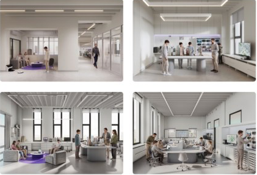

Разработка и реализация коммуникационных стратегий
Разработала и внедрила коммуникационную стратегию продвижения образовательных программ «Лаборатории ПИК», чтобы привлечь новую аудиторию и укрепить имидж компании как девелопера, развивающего социальную инфраструктуру.
Совместно с командой Яндекса разработала стратегию анонса образовательной программы «Интернет вещей».
Создала информационные и прогревающие email-рассылки для родителей. Продумала последовательность писем, ключевые сообщения и призывы к действию, чтобы стимулировать подачу заявок на образовательные программы.
Сформировала концепцию и смысловое наполнение лендинга «Школы с отличием», чтобы раскрыть преимущества образовательной инфраструктуры ПИК для потенциальных покупателей недвижимости и повысить привлекательность жилых комплексов для семей с детьми.
Успешно работала в связке с другими отделами: продукт, digital, дизайн, SMM и PR.
Смотреть примеры работСвернуть примеры работ
Школы с отличием
Концепция и смысловое наполнение лендинга

Работала над концепцией и смысловым наполнением лендинга.
Интернет вещей
Материалы образовательной программы

Материалы образовательной программы «Лаборатории ПИК».